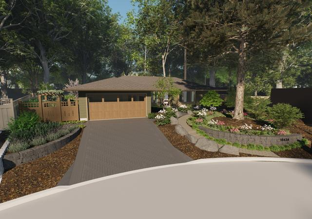
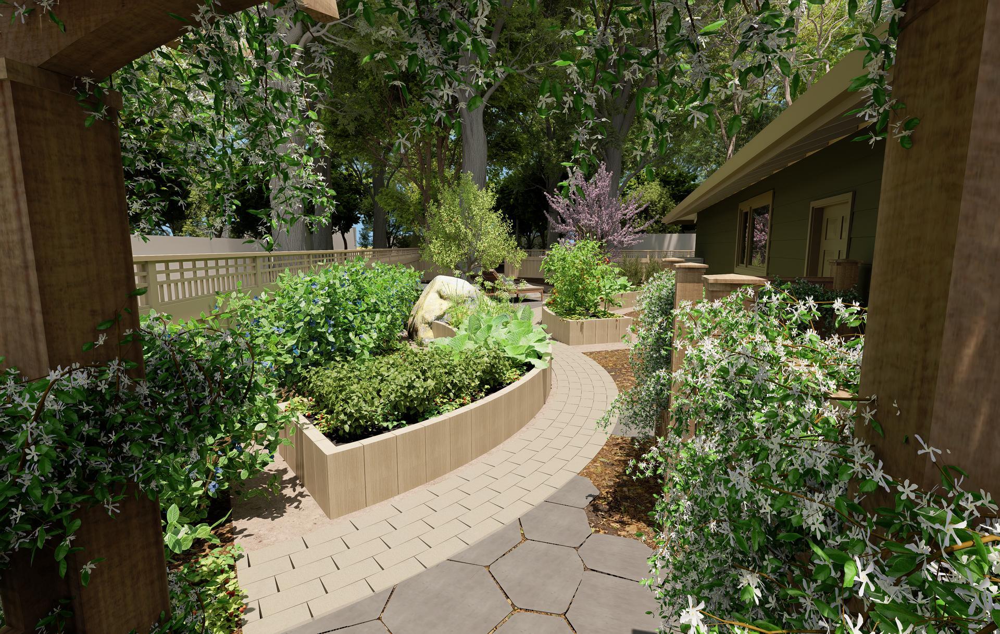
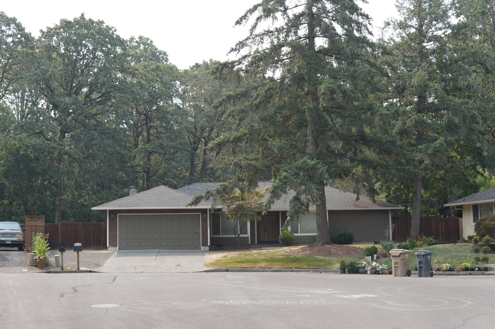

Bryant Woods Residence
Mature Oregon white oaks, towering Douglas-fi rs, and massive glacial
erratics give this otherwise sparsely landscaped property its
distinctive character. Inspired by the owners’ affi nity for intimate,
richly planted gardens, the design introduces interconnected spaces
with meandering paths and small seating areas nestled within lush
vegetation. Beige pavers and basalt fl agstone offer a contemporary
interpretation of traditional garden pathways, while basalt walls
complement the site’s ancient boulders. Cedar fencing, arbors, and
vine-covered screens weave through the garden, providing warmth,
privacy, and enclosure.
The backyard is devoted largely to cultivation and habitat. Curved
wood planters anchor a generous edible garden full of vegetables,
herbs, berries, and fruit trees, while an extensive pollinator garden
bolsters this productive landscape. Douglas-fi r forest understory and
Oregon white oak shrubland plantings build upon the property’s mature
woodland character, bringing greater richness and biodiversity to the
site.
Location: Lake Oswego, OR
Collaborators: Christie Architects
Status: Design Development
Collaborators: Christie Architects
Status: Design Development


